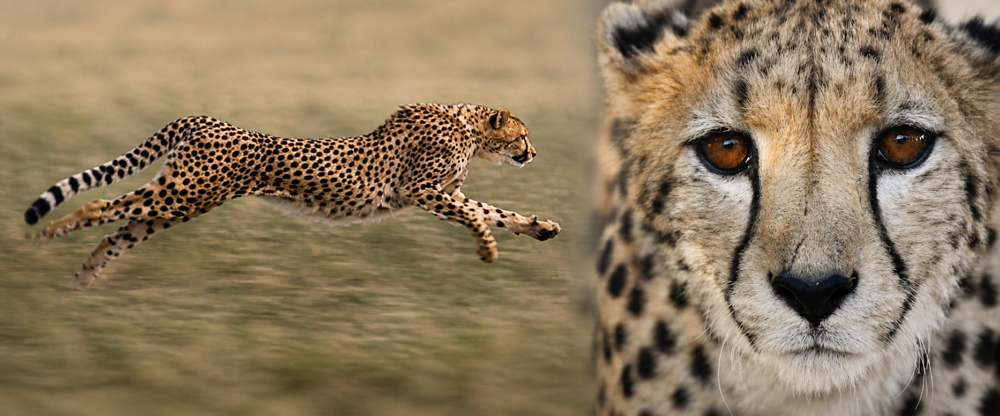

-
August 2026 Donation
Monthly donation registered plus bonus amount
- $250 initial donation: $50 recurring and $200 extra from a frugal lifestyle. Of this, $100 is dedicated to an orphaned cheetah cub in Somaliland named T-Swift.
- Bought some books.
- Study protection efforts, associations, and funds in Kenya (Masai Mara), and write to CCF to ask if they have plans to expand their protection to Kenya's Masai Mara, where cheetahs are living in a notoriously terrible environment.
-
July 2026 Donation
First donation to CCF
- A one-time manual donation of $50 to the Cheetah Conservation Fund (CCF) US foundation. I meant to set up a recurring monthly donation but didn't register it correctly, so only this single payment went through.
my contribution to saving cheetahs from extinction

Goals
Contribute to CHEETAH protection (very much needed and currently insufficient) as an ORDINARY person.
Current Phase of 2026
- Donation to CCF (Cheetah Conservation Fund, cheetah.org). Started in July 2026. Monthly donation: $200–$300, saved by following this principle—at most one restaurant meal and no unnecessary purchases.
- Reading around 3 books or websites, and visiting San Diego Zoo, which is the most active cheetah research and protection center.
- Future TODO: visit CCF in Namibia, Africa, and work as a cheetah conservation ranger: patrol landscapes, track wild cheetahs, and work with local communities to prevent human-wildlife conflict.
Actively Exploring Questions:
-
Basic knowledge about cheetah protection
- Study the current cheetah protection coalition and the difficulty of copying the Chinese panda pattern.
- Study foundations that protect cheetahs in Kenya and Iran.
- Check whether human intervention (protecting cheetah cubs from lions and hyenas) is an effective choice, and if not, why.
- Study whether farms and poaching are still the key reasons for cheetah decline in Kenya, or whether too many tourists are also a factor.
- How can my major in computer science (including IoT, computer vision, etc.) help protect cheetahs?
Monthly log
The cats themselves


~ photos found online, not mine — to be replaced as I take my own ~